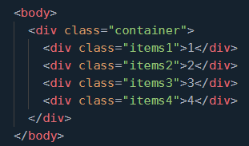

Esta propiedad a diferencia de las otras no se aplica al contenedor padre, por el contrario esta
propiedad es aplicada al item en cuestion, loque hace esta propiedad es aplicar el tamaño dado
al valor de la propiedad ya sea en pixeles, cm, etc, y esta ocupara ese tamaño, siempre y cuando el view port
se lo suficientemente grande para ocupar ese espacio, pero si se disminuye el view port, entonces,
guardara proporciones con respecto a los demas elementos
A tener en cuenta flex-basis siempre se aplica antes de aplicar flex grow y flex shrink
Valor especifico: Se refiere a un valor dado en cualquier unidad de medida, pixel, rem, porcentaje, etc.
auto: Si usas auto su tamaño inicial sera el valor de widht, si no se ajusta al contenido del elemento
Aunque aquin adelante se ven los ejemplos puedes abrir el inspector (cntrol + shift + i para chrome) de la consola y variar el tamaño de la ventana
para ver aun mejor la variacion como se aprecia en el video mas adelante
El siguiente es el codigo del ejemplo en HTML, CSS y JavaScript, para flex basis
Como vemos en el siguiente video, vemos que el contenedor 1 tiene un flex basis de 50px sin embargo al encogerse
este, se ajusta a un tamaño mejor, sin intervenir con el tamaño de los otros y guardando proporciones
El anterior video se capturo con screenpreso software gratuito
Click aqui para descargar SCREENPRESSOEs un short hand se usa para simplificar la redaccion del codigo y reune las tres anteriores propiedades, en
una sola linea ( flex-grow, flex-shrink, flex-basis)
El siguiente es el codigo del ejemplo en HTML, CSS y JavaScript, para flex shorthand

Para visualizar mejor tambieen seria adecuado usar el inspector de elementos (cntrol + shift + i para chrome),
como se aprecia en el video
El anterior video se capturo con screenpreso software gratuito
Click aqui para descargar SCREENPRESSOEste propiedad controla si los elementos de un contenedor, se conservan en una o varias lineas, dependiendo de
Si el espacio es suficiente o no, sus opciones son:
flex-start:No permite el ajuste de los elementos en múltiples líneas (valor por defecto).
flex-start: Permite que los elementos se ajusten en varias líneas.
flex-start: Permite que los elementos se ajusten en varias líneas, pero en orden inverso.
El siguiente es el codigo del ejemplo en HTML, CSS y JavaScript, para flex wrap